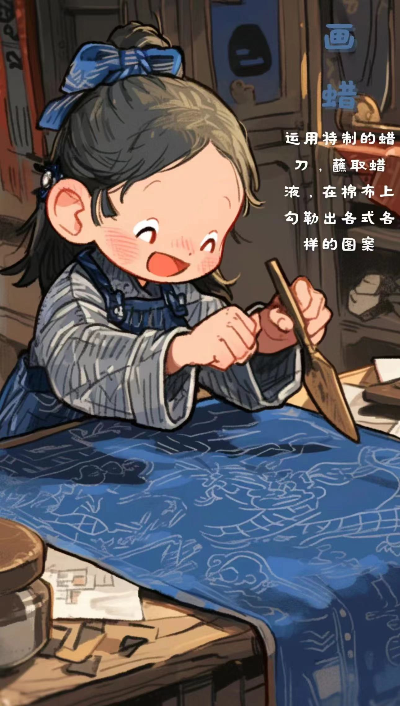
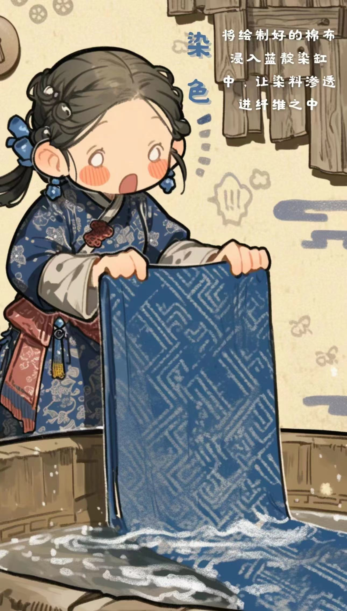
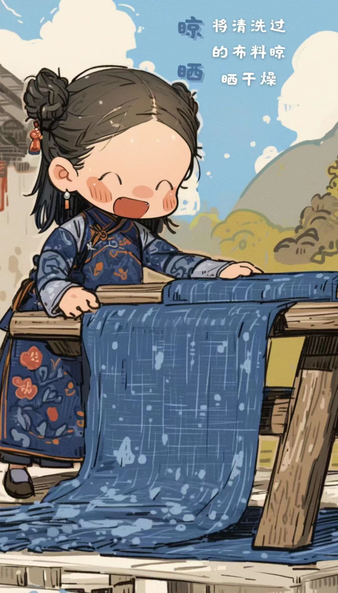

煮蜡

1. 处理布料：将自产的布用草灰漂白洗净，然后用煮熟的芋捏成糊状涂抹于布的反面，待晒干后用牛角磨平、磨光； 2. 点蜡：把白布平帖在木板或桌面上，把蜂蜡放在陶瓷碗或金属罐里，用火盆里的木炭灰或糠壳火使蜡融化，便可以用铜刀蘸蜡，画出各种图案花纹； 3. 染色：把画好的蜡片放在蓝靛染缸里，一般每一件需浸泡五、六天。第一次浸泡后取出晾干，便得浅蓝色；再放入浸泡数次，便得深蓝色。如果需要在同一织物上出现深浅两色的图案，便在第一次浸泡后，在浅蓝色上再点绘蜡花浸染，染成以后即现出深浅两种花纹； 4. 去蜡：经过冲洗，然后用清水煮沸，煮去蜡质，经过漂洗后，布上就会显出蓝、白分明的花纹来。
画蜡
1. 准备工具和材料：蜡染需要用到蜡刀、蜂蜡、布料、火炉等工具和材料。 2. 设计图案：在进行画蜡之前，需要先设计好要绘制的图案。可以根据个人喜好和创意来设计，也可以参考传统的蜡染图案。 3. 融化蜂蜡：将蜂蜡放在火炉上或专用的加热器中融化，使其成为液态。 4. 调节蜡温：根据需要，将蜡温调节到适宜的温度。一般来说，蜡温不宜过高或过低，以确保蜡能够均匀地附着在布料上。 5. 画蜡：用蜡刀蘸取融化的蜂蜡，然后在布料上进行绘制。可以根据设计好的图案，用蜡刀勾勒出线条、形状和图案。 6. 细节处理：在画蜡的过程中，可以根据需要进行细节处理，如填充颜色、加粗线条等。 7. 检查和修正：完成画蜡后，仔细检查图案是否完整、清晰。如有需要，可以进行修正和补充。 8. 等待蜡凝固：让绘制好的布料自然冷却，使蜡凝固在布料上。 10. 准备染色：完成画蜡后，就可以进行染色步骤了。将布料放入染缸中，按照染色的要求进行操作
染色
1. 准备染液：根据需要准备相应颜色的染液，可以使用天然染料或化学染料。将染料溶解在适量的水中，搅拌均匀，确保染液的浓度适中。 2. 浸泡布料：将画好蜡的布料放入染液中，让其完全浸泡。浸泡的时间根据染料的种类、颜色的深浅和个人喜好而定。一般来说，浸泡时间越长，颜色就会越深。 3. 搅拌和翻动：在浸泡过程中，可以适当搅拌或翻动布料，以确保布料均匀地吸收染料。这样可以获得更均匀的染色效果。 4. 控制温度：染色过程中的温度也会影响染色效果。有些染料可能需要在特定的温度下进行染色，以达到最佳效果。可以根据染料的要求控制水温。 5. 漂洗和清洗：染色完成后，将布料取出，用清水漂洗，以去除多余的染料。然后用洗涤剂或清水彻底清洗布料，确保布料上没有残留的染料和蜡。 6. 晾干和固色：将清洗后的布料晾干，然后根据需要进行固色处理。固色可以帮助固定染料的颜色，使其不易褪色。
晾晒
1. 浸染完成后：将浸染后的布料从染缸中取出，用清水冲洗，去除多余的染料和杂质。 2. 晾晒：将布料挂在通风良好的地方，避免阳光直射。可以使用衣架或绳子将布料吊起，让其自然晾干。 3. 翻面晾晒：在晾晒过程中，适时翻面，以确保布料两面都能均匀晾干。 4. 避免暴晒：长时间的阳光暴晒可能会导致颜色褪色或布料受损，因此尽量选择阴凉通风的地方晾晒。 5. 注意防潮：如果环境潮湿，可能会影响晾干速度，可以考虑在干燥的室内或使用干燥剂。 6. 完全晾干：确保布料完全晾干后，再进行下一步的处理或使用。